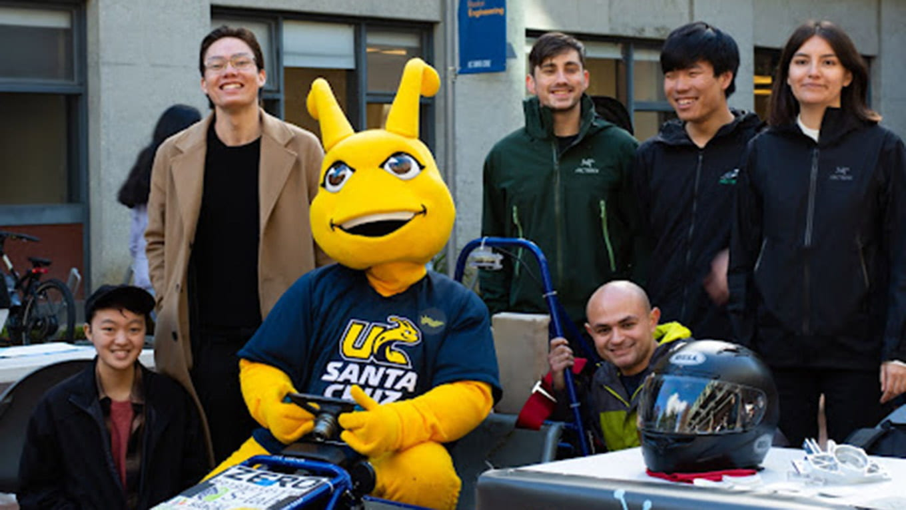
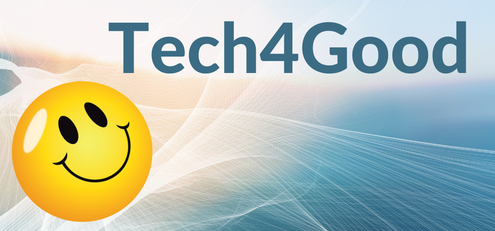
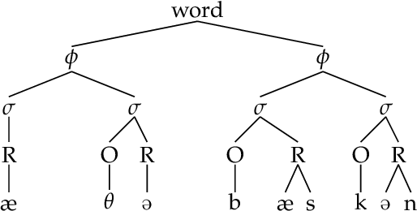
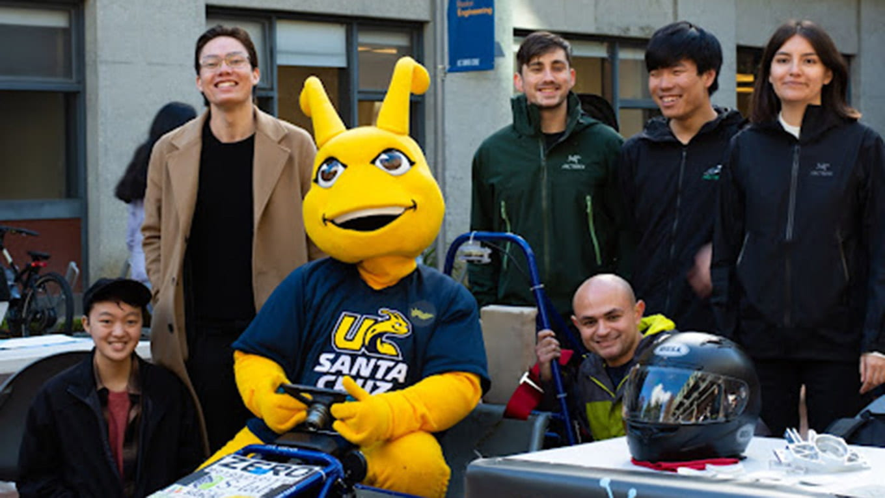
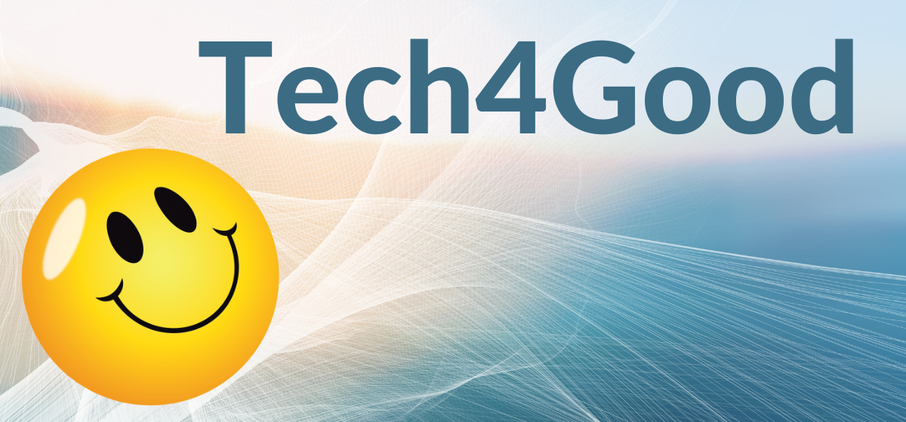
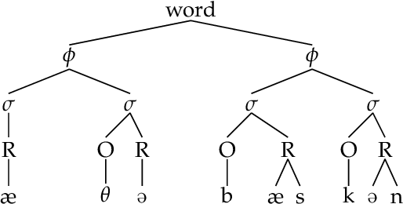

Experiences
Co-Executive Chair • Baskin Day
June 2023 - present
Recruit and onboard team of 16 students from traditionally underserved campus populations across all engineering majors for Baskin Day, a yearly student-run event celebrating UCSC’s Baskin School of Engineering (BSOE). Create, prioritize, and manage general schedule for the four-month event planning process. Support and communicate with team members through biweekly all-hands team meetings.
Undergraduate Research Assistant • UC Santa Cruz
Jan 2023 - June 2023
Classified subjects and complements of Korean sentences in Google Sheets corpus for PhD student Niko Webster's ongoing qualifying paper research on the syntax of Sino-Korean eventive nominals.
Natural Language Processing Intern • Tech4Good Lab @ UCSC
Sept 2022 - Dec 2022
Refactored and documented existing Python code on concept extraction, similarity, and clustering for the development of Compass, a career mentorship conversational UX app. Created Python programming exercises to build incoming team members’ understanding of NLP.
Alison Sun 2023